ДЗ
Динамика движения тел по окружности
Выберите вариант ответа или введите полученное числовое значение.
Задача 1
А1. На горизонтальном диске на расстоянии $r = 12\text{ см}$ от его оси вращения лежит маленький кубик. Ось вращения проходит через центр диска перпендикулярно его плоскости. Если коэффициент трения между кубиком и диском $\mu = 0,30$, то кубик начнет скользить по диску при минимальной угловой скорости вращения $\omega$, равной:
Решение:
А1. На рисунке 443 показаны силы, действующие на кубик. По второму закону Ньютона $\vec{F}_{\text{тр. п}}^{\max} + \vec{N} + m\vec{g} = m\vec{a}$. В проекциях на оси $Ox$ и $Oy$ получим: $F_{\text{тр. п}}^{\max} = ma$ и $N - mg = 0$. Модуль максимальной силы трения, действующей на кубик, $F_{\text{тр. п}}^{\max} = \mu N$. Модуль центростремительного ускорения $a = \omega^2 r$. Из записанных уравнений найдем ответ:
$$\omega = \sqrt{\frac{\mu g}{r}} = 5,0\text{ }\frac{\text{рад}}{\text{с}}.$$
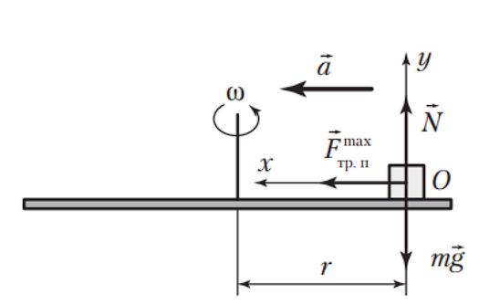
Задача 2
А2. Маленькая муфта массой $m = 0,20\text{ кг}$ может перемещаться без трения по горизонтальному стержню, прикрепленному к вертикальной оси (рис. 74). Муфта связана с осью невесомой пружиной длиной $l_0$. Если при вращении стержня вокруг вертикальной оси с угловой скоростью $\omega = 3,0\text{ }\frac{\text{рад}}{\text{с}}$ длина пружины $l = 1,4l_0$, то жесткость $k$ пружины равна:
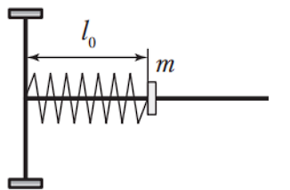
Решение:
А2. На рисунке 444 показаны сила упругости $\vec{F}_{\text{упр}}$, действующая на муфту, и центростремительное ускорение $\vec{a}$. По второму закону Ньютона $F_{\text{упр}} = ma$. По закону Гука $F_{\text{упр}} = k(l - l_0)$. Модуль центростремительного ускорения $a = \omega^2 l$. Из записанных уравнений найдем ответ: $k = 6,3\text{ }\frac{\text{Н}}{\text{м}}$.
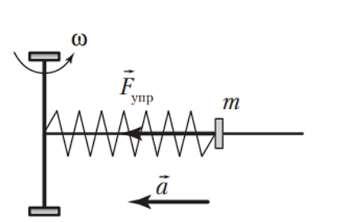
Задача 3
А3. Горизонтальный диск вращается вокруг вертикальной оси, проходящей через центр диска. Один конец легкой пружины жесткостью $k = 24\text{ }\frac{\text{Н}}{\text{м}}$ прикреплен к оси диска, другой — к маленькой шайбе массой $m = 40\text{ г}$. Если в недеформированном состоянии длина пружины $l_0 = 25\text{ см}$, а при вращении диска с постоянной угловой скоростью пружина удлиняется на $\Delta l = 5,0\text{ см}$, то без учета силы трения модуль линейной скорости $\upsilon$ движения шайбы равен:
Решение:
А3. По второму закону Ньютона $F_{\text{упр}} = ma$. По закону Гука $F_{\text{упр}} = k\Delta l$. Модуль центростремительного ускорения $a = \frac{\upsilon^2}{l_0 + \Delta l}$. Из записанных уравнений найдем ответ:
$$\upsilon = \sqrt{\frac{k\Delta l(l_0 + \Delta l)}{m}} = 3,0\text{ }\frac{\text{м}}{\text{с}}.$$
Задача 4
А4. Жесткая горизонтальная планка может вращаться вокруг вертикальной оси, проходящей через ее центр. На расстояниях $r_1 = 40\text{ см}$ и $r_2 = 30\text{ см}$ от оси вращения планки закреплены грузы массами $m_1 = 200\text{ г}$ и $m_2 = 100\text{ г}$ (рис. 75). Если планка вращается с угловой скоростью $\omega = 30\text{ }\frac{\text{рад}}{\text{с}}$, то модуль $F$ результирующей горизонтальной силы, с которой грузы действуют на планку, равен:
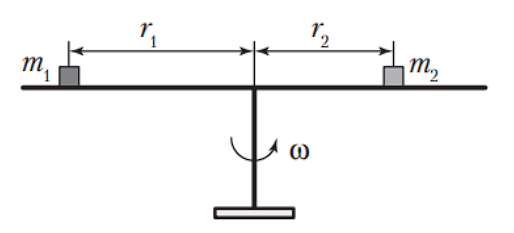
Решение:
А4. Модуль горизонтальной силы, с которой каждый груз действует на планку, найдем из второго закона Ньютона: $F_1 = m_1 a_1$ и $F_2 = m_2 a_2$. Так как эти силы направлены в противоположные стороны, то $F = F_1 - F_2$. Модуль ускорения $a_1 = \omega^2 r_1$ и $a_2 = \omega^2 r_2$. Из записанных уравнений найдем ответ: $F = 45\text{ Н}$.
Задача 5
А5. Самолет, выполняя «мертвую петлю», движется по окружности в вертикальной плоскости. В нижней точке траектории сила давления летчика на сиденье в $n = 5$ раз больше силы тяжести, действующей на летчика. Если в верхней точке траектории летчик испытывает состояние невесомости, то отношение модуля скорости движения самолета в нижней точке «мертвой петли» к модулю скорости движения самолета в ее верхней точке $\frac{\upsilon_{\text{н}}}{\upsilon_{\text{в}}}$ равно:
Решение:
А5. На рисунке 445 показаны силы, действующие на летчика в нижней и верхней точках траектории полета самолета. По второму закону Ньютона $F_1 - mg = ma_1$ и $mg = ma_2$. Модуль ускорения самолета $a_1 = \frac{\upsilon_{\text{н}}^2}{R}$ и $a_2 = \frac{\upsilon_{\text{в}}^2}{R}$, где $R$ — радиус «мертвой петли». По третьему закону Ньютона $F_1 = F_{\text{д}}$. Учитывая, что $F_{\text{д}} = nmg$, из записанных уравнений найдем ответ:
$$\frac{\upsilon_{\text{н}}}{\upsilon_{\text{в}}} = 2.$$
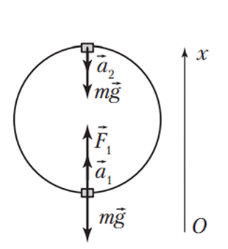
Задача 6
А6. Маятник Фуко, установленный в средней школе № 69 г. Гомеля, имеет массу шара $m = 60,0\text{ кг}$ и длину троса $l = 12,0\text{ м}$. Если в момент прохождения маятником положения равновесия модуль скорости шара $\upsilon = 3,00\text{ }\frac{\text{м}}{\text{с}}$, то шар действует на трос с силой, модуль $F$ которой равен:
Решение:
А6. На рисунке 446 показаны силы, действующие на шар. По второму закону Ньютона $F_{\text{н}} - mg = ma$. Модуль центростремительного ускорения движения шара $a = \frac{\upsilon^2}{l}$. По третьему закону Ньютона $F = F_{\text{н}}$. Из записанных уравнений найдем ответ: $F = 645\text{ Н}$.
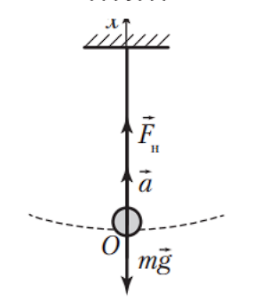
Задача 7
А7. Груз массой $m = 0,6\text{ кг}$, подвешенный на легкой нерастяжимой нити длиной $l = 40\text{ см}$, отводят в сторону и отпускают без начальной скорости. Если в момент времени, когда нить образует с вертикалью угол $\alpha = 60^\circ$, модуль скорости груза $\upsilon = 2,0\text{ }\frac{\text{м}}{\text{с}}$ (рис. 76), то в этот момент времени модуль силы натяжения нити $F_{\text{н}}$ равен:
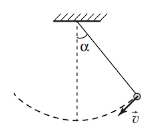
Решение:
А7. На рисунке 447 показаны силы, действующие на груз. Из второго закона Ньютона в проекции на ось $Ox$ получим: $F_{\text{н}} - mg\cos\alpha = ma$, где $a = \frac{\upsilon^2}{l}$ — модуль центростремительного ускорения груза. Из записанных уравнений найдем ответ: $F_{\text{н}} = 9\text{ Н}$.
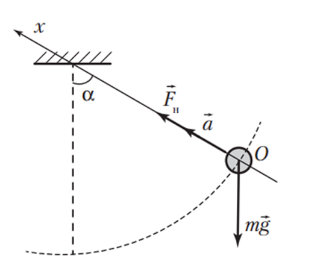
Задача 8
А8. Маленький шарик, подвешенный на нерастяжимой нити длиной $l$, равномерно движется по окружности в горизонтальной плоскости (рис. 77). Если при движении шарика нить составляет с вертикалью угол $\alpha$, то период $T$ обращения шарика равен:
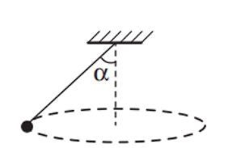
Решение:
А8. На рисунке 448 показаны силы, действующие на шарик. По второму закону Ньютона $\vec{F}_{\text{н}} + m\vec{g} = m\vec{a}$. Из прямоугольного треугольника следует: $\operatorname{tg}\alpha = \frac{a}{g}$, где $a = \left(\frac{2\pi}{T}\right)^2 r$ — модуль центростремительного ускорения шарика. Радиус окружности $r = l\sin\alpha$. Из записанных уравнений найдем ответ:
$$T = 2\pi\sqrt{\frac{l\cos\alpha}{g}}.$$
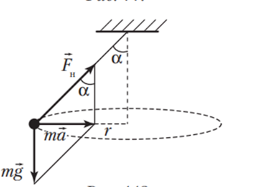
Задача 9
А10. Лыжник массой $m = 75\text{ кг}$ движется по вогнутому участку лыжной трассы с радиусом кривизны $R = 30\text{ м}$. Если модуль скорости движения лыжника в нижней точке трассы $\upsilon = 6,0\text{ }\frac{\text{м}}{\text{с}}$, то модуль силы давления $F_{\text{д}}$ лыж на снег в этой точке равен:
Решение:
А10. На рисунке 450 показаны силы, действующие на лыжника. Из второго закона Ньютона следует: $N - mg = ma$. Модуль ускорения $a = \frac{\upsilon^2}{R}$. По третьему закону Ньютона $F_{\text{д}} = N$. Из записанных уравнений найдем ответ: $F_{\text{д}} = 0,84\text{ кН}$.
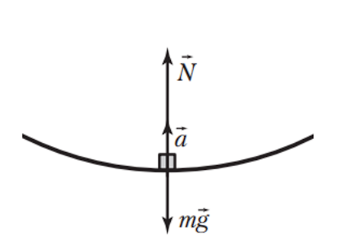
Задача 10
А11. Расстояние между крайними опорами моста $l = 100\text{ м}$ (рис. 79). Верхняя точка моста находится над уровнем крайних опор на высоте $h = 10\text{ м}$. Если автомобиль массой $m = 2,5\text{ т}$ движется по мосту со скоростью, модуль которой $\upsilon = 26\text{ }\frac{\text{м}}{\text{с}}$, то модуль силы давления $F_{\text{д}}$ автомобиля на мост в его верхней точке равен:
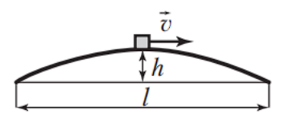
Решение:
А11. На рисунке 451 показаны силы, действующие на автомобиль. Из второго закона Ньютона следует: $mg - N = ma$. Модуль ускорения $a = \frac{\upsilon^2}{R}$. По третьему закону Ньютона $F_{\text{д}} = N$. Из прямоугольного треугольника $ABO$ следует: $R^2 = (0,5l)^2 + (R - h)^2$. Отсюда радиус кривизны моста $R = 130\text{ м}$. Из записанных уравнений найдем ответ: $F_{\text{д}} = 12\text{ кН}$.
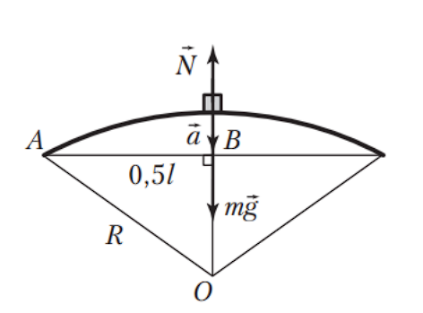
Задача 11
А12. Радиус поворота горизонтальной дороги $R = 108\text{ м}$. Если коэффициент трения между шинами автомобиля и дорогой $\mu = 0,30$, то модуль максимальной скорости $\upsilon_{\max}$ движения автомобиля, при которой он сможет проехать поворот, равен:
Решение:
А12. Автомобилю при повороте центростремительное ускорение сообщает сила трения покоя, действующая со стороны дороги на колеса автомобиля и направленная перпендикулярно скорости автомобиля. Из второго закона Ньютона следует: $F_{\text{тр. п}}^{\max} = ma$. Модуль максимальной силы трения покоя $F_{\text{тр. п}}^{\max} = \mu mg$, модуль центростремительного ускорения автомобиля $a = \frac{\upsilon_{\max}^2}{R}$. Из записанных уравнений найдем ответ:
$$\upsilon_{\max} = \sqrt{\mu gR} = 18\text{ }\frac{\text{м}}{\text{с}}.$$
Задача 12
А13. Поворот горизонтальной дороги представляет собой дугу окружности. Если коэффициент трения между колесами мотоцикла и дорогой $\mu = 0,75$, а при максимально возможной скорости прохождения поворота модуль силы взаимодействия мотоциклиста с сиденьем мотоцикла $N = 1,0\text{ кН}$, то масса $m$ мотоциклиста равна:
Решение:
А13. На мотоциклиста действуют сила тяжести $m\vec{g}$ и сила реакции сиденья мотоцикла $\vec{N}$. По второму закону Ньютона $m\vec{g} + \vec{N} = m\vec{a}$. По теореме Пифагора $N^2 = (mg)^2 + (ma)^2$. Для определения модуля ускорения мотоциклиста запишем уравнение: $\mu m_0 g = m_0 a$, где $m_0$ — масса мотоцикла вместе с мотоциклистом. Из записанных уравнений найдем ответ:
$$m = \frac{N}{\sqrt{g^2 + (\mu g)^2}} = 80\text{ кг}.$$
Задача 13
А15. Искусственный спутник движется по круговой орбите вокруг Земли ($M_{\text{З}} = 6,0\cdot 10^{24}\text{ кг}$). Если модуль линейной скорости движения спутника $\upsilon = 3,2\text{ }\frac{\text{км}}{\text{с}}$, то радиус $R$ его орбиты равен:
Решение:
А15. По второму закону Ньютона $F_{\text{т}} = ma$. По закону всемирного тяготения $F_{\text{т}} = G\frac{mM_{\text{З}}}{R^2}$. Модуль центростремительного ускорения $a = \frac{\upsilon^2}{R}$. Из записанных уравнений найдем ответ: $R = 3,9\cdot 10^7\text{ м}$.
Задача 14
А16. Первым покорителем Южного полюса Земли является норвежский путешественник-исследователь Руаль Амундсен. Угловая скорость вращения Земли вокруг своей оси $\omega = 7,0\cdot 10^{-5}\text{ }\frac{\text{рад}}{\text{с}}$, радиус Земли $R = 6,4\cdot 10^6\text{ м}$. Если модуль веса Амундсена на полюсе Земли больше, чем его модуль веса на экваторе, на $\Delta P = 2,352\text{ Н}$, то масса $m$ Амундсена равна:
Решение:
А16. По второму закону Ньютона на полюсе $F_{\text{т}} = N_1$, на экваторе $F_{\text{т}} - N_2 = ma_2$. По третьему закону Ньютона $N_1 = P_1$ и $N_2 = P_2$. Согласно условию $\Delta P = P_1 - P_2$. Модуль центростремительного ускорения Амундсена на экваторе $a_2 = \omega^2 R$. Из записанных уравнений найдем ответ:
$$m = \frac{\Delta P}{\omega^2 R} = 75\text{ кг}.$$
Задача 15
А18. Если две планеты вращаются вокруг звезды по круговым орбитам, отношение радиусов которых $\frac{R_1}{R_2} = 4$, то отношение периодов $\frac{T_1}{T_2}$ обращения планет равно:
Решение:
А18. Рассмотрим движение первой планеты вокруг звезды. По второму закону Ньютона $F_{\text{т}1} = m_{\text{п}1}a_1$. По закону всемирного тяготения $F_{\text{т}1} = G\frac{m_{\text{п}1}M_{\text{зв}}}{R_1^2}$. Модуль центростремительного ускорения первой планеты $a_1 = \frac{(2\pi)^2}{T_1^2}R_1$. Из записанных уравнений получим: $G\frac{M_{\text{зв}}}{R_1^2} = \frac{(2\pi)^2}{T_1^2}R_1$. Рассмотрев движение второй планеты вокруг звезды, получим $G\frac{M_{\text{зв}}}{R_2^2} = \frac{(2\pi)^2}{T_2^2}R_2$. Из записанных уравнений найдем ответ:
$$\frac{T_1}{T_2} = \sqrt{\frac{R_1^3}{R_2^3}} = 8.$$
Задача 16
А20. Радиус Юпитера равен $R_{\text{Ю}}$. Период обращения спутника вокруг Юпитера, движущегося по круговой орбите радиусом $R$, равен $T$. Модуль первой космической скорости $\upsilon_{\text{Ю}}$ для Юпитера равен:
Решение:
А20. По второму закону Ньютона $F_{\text{т}} = m_{\text{с}}a$. По закону всемирного тяготения $F_{\text{т}} = G\frac{m_{\text{с}}M_{\text{Ю}}}{R^2}$. Модуль центростремительного ускорения спутника $a = \frac{(2\pi)^2}{T^2}R$. Из записанных уравнений получим: $G\frac{M_{\text{Ю}}}{R^2} = \frac{(2\pi)^2}{T^2}R$. Модуль первой космической скорости движения спутника Юпитера $\upsilon_{\text{Ю}} = \sqrt{\frac{GM_{\text{Ю}}}{R_{\text{Ю}}}}$. На основании полученных уравнений найдем ответ:
$$\upsilon_{\text{Ю}} = \frac{2\pi R}{T}\sqrt{\frac{R}{R_{\text{Ю}}}}.$$
Задача 17
В1. Искусственный спутник движется по круговой орбите вокруг Земли на высоте $h = 3600\text{ км}$ над ее поверхностью. Радиус Земли $R = 6400\text{ км}$. Модуль ускорения свободного падения на поверхности Земли $g = 10\text{ }\frac{\text{м}}{\text{с}^2}$. Модуль линейной скорости $\upsilon$ движения спутника равен ... $\frac{\text{м}}{\text{с}}$.
Решение:
В1. Используя второй закон Ньютона и закон всемирного тяготения, получим уравнение $G\frac{mM}{(R + h)^2} = m\frac{\upsilon^2}{R + h}$. Модуль ускорения свободного падения $g = G\frac{M}{R^2}$. Из записанных уравнений найдем ответ:
$$\upsilon = R\sqrt{\frac{g}{R + h}} = 6400\text{ }\frac{\text{м}}{\text{с}}.$$
Задача 18
В2. Два маленьких шарика вращаются на невесомых нерастяжимых нитях вокруг вертикальных осей с постоянными угловыми скоростями (рис. 80, а, б). Если модуль линейной скорости движения первого шарика $\upsilon_1 = 12\text{ }\frac{\text{м}}{\text{с}}$, то модуль линейной скорости $\upsilon_2$ движения второго шарика равен ... $\frac{\text{м}}{\text{с}}$.
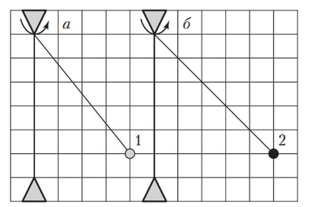
Решение:
В2. Рассмотрим движение первого шарика, на который действуют сила натяжения нити и сила тяжести. Из второго закона Ньютона следует: $\operatorname{tg}\alpha_1 = \frac{m_1 a_1}{m_1 g}$, где $m_1$ — масса первого шарика, $a_1$ — модуль центростремительного ускорения первого шарика, $\alpha_1$ — угол отклонения первой нити от вертикали. Пусть длина одной стороны клетки равна $r$, тогда на основании рисунка 80 можно записать уравнение $\frac{4}{5} = \frac{\upsilon_1^2}{4rg}$, где $\operatorname{tg}\alpha_1 = \frac{4}{5}$, $a_1 = \frac{\upsilon_1^2}{4r}$. Рассмотрев движение второго шарика, получим аналогичное уравнение: $1 = \frac{\upsilon_2^2}{5rg}$. Из записанных уравнений следует: $\upsilon_2 = 15\text{ }\frac{\text{м}}{\text{с}}$.
Задача 19
В3. Два шарика массами $m_1 = 40\text{ г}$ и $m_2 = 120\text{ г}$, связанные легкой нерастяжимой нитью, могут скользить по гладкому горизонтальному стержню, укрепленному на горизонтальном диске (рис. 81). Расстояние между центрами шариков $L = 40\text{ см}$. Если при вращении диска с постоянной угловой скоростью шарики не скользят по стержню, то первый шарик находится от оси вращения на расстоянии $r_1$, равном ... см.
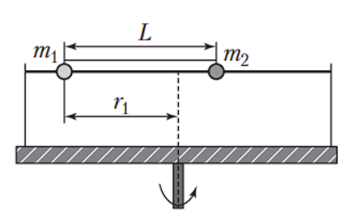
Решение:
В3. Из второго закона Ньютона следует: $F_{\text{н}1} = m_1 a_1$ и $F_{\text{н}2} = m_2 a_2$. По третьему закону Ньютона модули сил натяжения нити равны ($F_{\text{н}1} = F_{\text{н}2}$). Модуль центростремительного ускорения: $a_1 = \omega^2 r_1$ и $a_2 = \omega^2(L - r_1)$, где $\omega$ — угловая скорость вращения диска и шариков. Из записанных уравнений найдем ответ:
$$r_1 = \frac{m_2 L}{m_1 + m_2} = 30\text{ см}.$$
Задача 20
В4. Шарик на легкой нерастяжимой нити равномерно вращается в горизонтальной плоскости (рис. 82). Если угловая скорость обращения шарика $\omega = 5,0\text{ }\frac{\text{рад}}{\text{с}}$, то расстояние $h$ от точки подвеса нити до плоскости вращения шарика равно ... см.
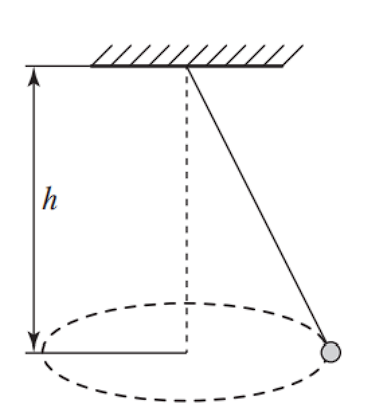
Решение:
В4. На рисунке 452 показаны силы, действующие на шарик. По второму закону Ньютона $\vec{F}_{\text{н}} + m\vec{g} = m\vec{a}$. Из подобных треугольников $AOC$ и $ADB$ следует: $\frac{h}{r} = \frac{g}{a}$. Модуль центростремительного ускорения шарика $a = \omega^2 r$. Из записанных уравнений найдем ответ:
$$h = \frac{g}{\omega^2} = 40\text{ см}.$$
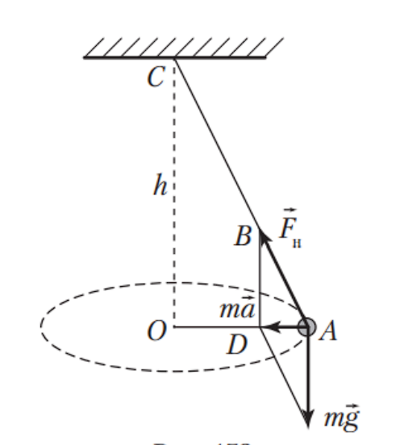
Задача 21
В5. Груз массой $m = 100\text{ г}$, привязанный к легкому резиновому шнуру, вращается с угловой скоростью $\omega = 10\text{ }\frac{\text{рад}}{\text{с}}$ по окружности в горизонтальной плоскости так, что шнур составляет угол $\alpha = 60^\circ$ с вертикалью. Если жесткость шнура $k = 40\text{ }\frac{\text{Н}}{\text{м}}$, то длина $l_0$ недеформированного шнура равна ... см.
Решение:
В5. На рисунке 453 показаны силы, действующие на груз. По второму закону Ньютона $\vec{F}_{\text{упр}} + m\vec{g} = m\vec{a}$. В проекциях на оси $Ox$ и $Oy$ это уравнение имеет вид $F_{\text{упр}}\sin\alpha = ma$ и $F_{\text{упр}}\cos\alpha - mg = 0$. По закону Гука $F_{\text{упр}} = k(l - l_0)$. Модуль центростремительного ускорения груза $a = \omega^2 l\sin\alpha$. Из записанных уравнений найдем ответ:
$$l_0 = \frac{g}{\omega^2\cos\alpha} - \frac{mg}{k\cos\alpha} = 15\text{ см}.$$
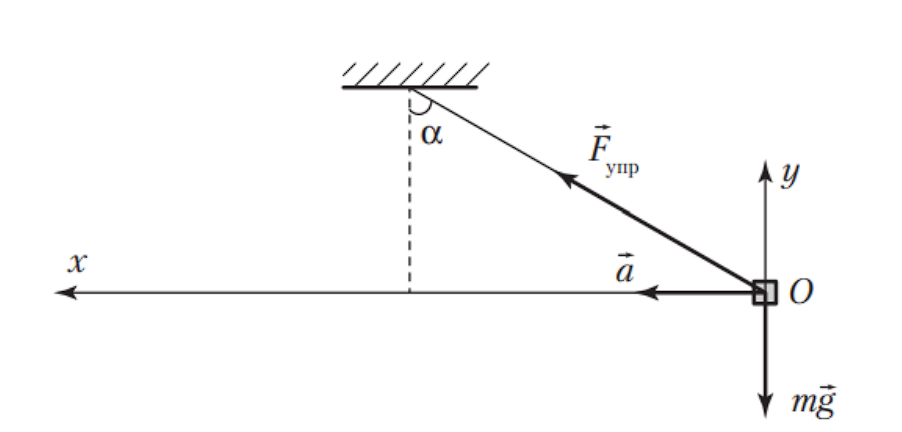
Задача 22
В7. К вершине конуса, который вращается с постоянной угловой скоростью $\omega = 5,0\text{ }\frac{\text{рад}}{\text{с}}$ вокруг вертикальной оси, прикреплен с помощью невесомой нерастяжимой нити маленький шарик (рис. 84). Угол между осью и образующей конуса $\alpha = 60^\circ$. Если при вращении конуса модуль силы натяжения нити в $n = 1,4$ раза больше модуля силы тяжести, действующей на шарик, то длина $l$ нити равна ... см.
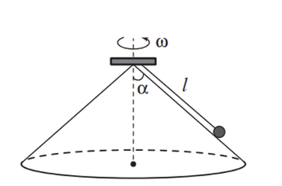
Решение:
В7. На рисунке 455 показаны силы, действующие на шарик. По второму закону Ньютона $\vec{F}_{\text{н}} + m\vec{g} + \vec{N} = m\vec{a}$. В проекциях на координатные оси $Ox$ и $Oy$ это уравнение имеет вид $F_{\text{н}}\sin\alpha - N\cos\alpha = ma$ и $F_{\text{н}}\cos\alpha + N\sin\alpha - mg = 0$. Модуль центростремительного ускорения шарика $a = \omega^2 l\sin\alpha$. Учитывая, что $F_{\text{н}} = nmg$, из записанных уравнений найдем ответ:
$$l = \frac{g(n - \cos\alpha)}{\omega^2\sin^2\alpha} = 48\text{ см}.$$
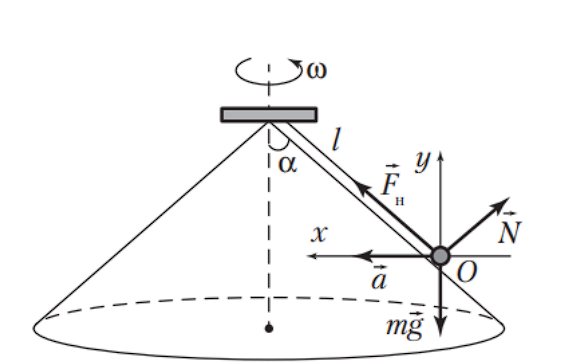
Задача 23
В8. Поворот велотрека радиусом $R = 50\text{ м}$ профилирован так, что полотно велотрека наклонено в сторону поворота под углом $\alpha$ ($\operatorname{tg}\alpha = 0,45$). Если трением пренебречь, то модуль максимальной скорости $\upsilon_{\max}$ прохождения велосипедистами такого поворота равен ... $\frac{\text{км}}{\text{ч}}$.
Решение:
В8. На рисунке 456 показаны силы, действующие на велосипедиста вместе с велосипедом. По второму закону Ньютона $\vec{F} + m\vec{g} = m\vec{a}$. Из прямоугольного треугольника следует: $\operatorname{tg}\alpha = \frac{a}{g}$. Модуль центростремительного ускорения велосипедиста $a = \frac{\upsilon_{\max}^2}{R}$. Из записанных уравнений найдем ответ: $\upsilon_{\max} = 54\text{ }\frac{\text{км}}{\text{ч}}$.
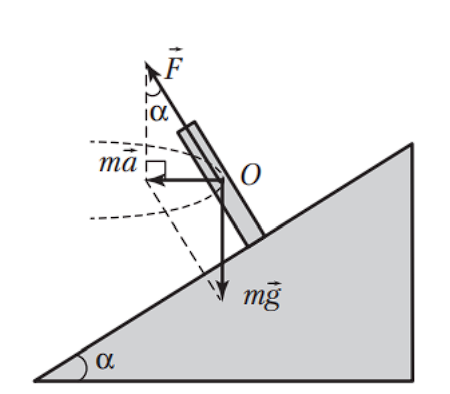
Задача 24
В9. Поворот наклонного трека с углом наклона $\alpha = 45^\circ$ к горизонту имеет радиус закругления $R = 30\text{ м}$. Если коэффициент трения между колесами мотоцикла и покрытием трека $\mu = 0,50$, то модуль максимально допустимой скорости $\upsilon_{\max}$ движения мотоциклиста на повороте трека равен ... $\frac{\text{м}}{\text{с}}$.
Решение:
В9. На рисунке 457 показаны силы, действующие на мотоцикл вместе с мотоциклистом. По второму закону Ньютона $\vec{N} + \vec{F}_{\text{тр}} + m\vec{g} = m\vec{a}$. В проекциях на координатные оси $Ox$ и $Oy$ получим: $N\sin\alpha + F_{\text{тр}}\cos\alpha = ma$ и $N\cos\alpha - F_{\text{тр}}\sin\alpha - mg = 0$. Модуль силы трения $F_{\text{тр}} = \mu N$. Модуль центростремительного ускорения мотоцикла $a = \frac{\upsilon_{\max}^2}{R}$. Из записанных уравнений найдем ответ:
$$\upsilon_{\max} = \sqrt{\frac{gR(\operatorname{tg}\alpha + \mu)}{1 - \mu\operatorname{tg}\alpha}} = 30\text{ }\frac{\text{м}}{\text{с}}.$$
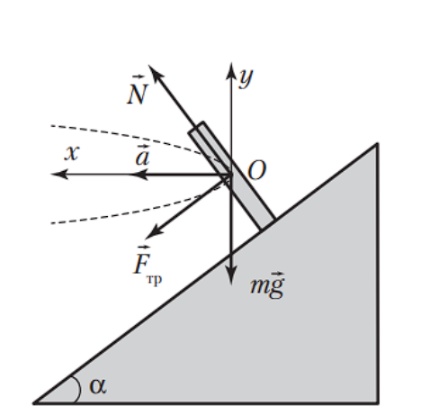
Задача 25
В10. Полусфера вращается с постоянной угловой скоростью $\omega = 5,0\text{ }\frac{\text{рад}}{\text{с}}$ вокруг вертикальной оси (рис. 85). Вместе с полусферой вращается маленький шарик, находящийся внутри нее. Если силой трения, действующей на шарик, пренебречь, то расстояние $h$ от центра полусферы до горизонтальной плоскости, в которой обращается шарик, равно ... см.
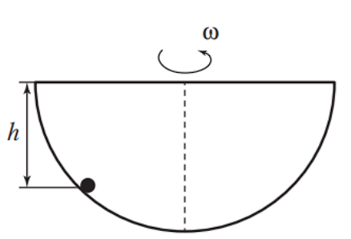
Решение:
В10. На рисунке 458 показаны силы, действующие на шарик. По второму закону Ньютона $\vec{N} + m\vec{g} = m\vec{a}$. Из подобных прямоугольных треугольников следует $\frac{a}{g} = \frac{r}{h}$. Модуль центростремительного ускорения $a = \omega^2 r$. Из записанных уравнений найдем ответ: $h = \frac{g}{\omega^2} = 40\text{ см}$.
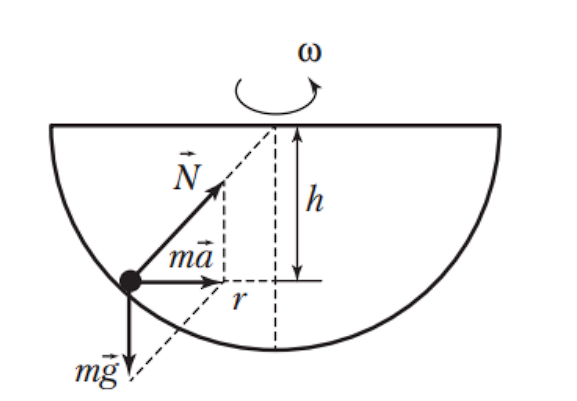
Задача 26
В14. Мотоцикл движется по холмистому участку мототрассы. Радиус кривизны холма в верхней точке мототрассы $R = 45\text{ м}$. Коэффициент трения покоя между колесами мотоцикла и трассой $\mu = 0,60$. Если модуль скорости движения мотоцикла в верхней точке холма $\upsilon = 15\text{ }\frac{\text{м}}{\text{с}}$, то при пренебрежимо малой силе сопротивления воздуха модуль максимального горизонтального ускорения $a$ движения мотоцикла в этой точке равен ... $\frac{\text{дм}}{\text{с}^2}$.
Решение:
В14. На рисунке 462 показаны силы, действующие на мотоцикл с мотоциклистом. Из второго закона Ньютона следует: $F_{\text{тр. п}}^{\max} = ma_{\max}$ и $N - mg = -ma_{\text{ц}}$. Модуль максимальной силы трения, действующей на колеса мотоцикла, $F_{\text{тр. п}}^{\max} = \mu N$. Модуль центростремительного ускорения $a_{\text{ц}} = \frac{\upsilon^2}{R}$. Из записанных уравнений найдем ответ: $a_{\max} = 30\text{ }\frac{\text{дм}}{\text{с}^2}$.
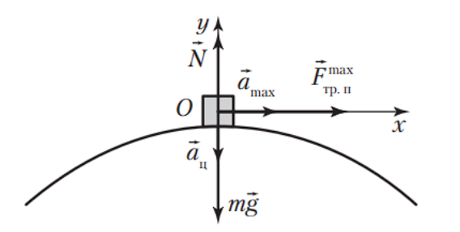
Задача 27
В15. Каскадер ездит на мотоцикле по внутренней поверхности вертикальной стенки, имеющей форму цилиндра радиусом $R = 10\text{ м}$ (рис. 86). Траектория мотоцикла расположена в горизонтальной плоскости. Если коэффициент трения покоя между шинами мотоцикла и поверхностью цилиндра $\mu = 0,25$, то модуль минимальной скорости $\upsilon_{\min}$, с которой движется каскадер, равен ... $\frac{\text{м}}{\text{с}}$.
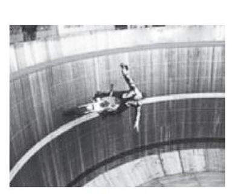
Решение:
В15. На рисунке 463 показаны силы, действующие на мотоцикл с каскадером. Из второго закона Ньютона следует: $F_{\text{тр. п}}^{\max} - mg = 0$ и $N = ma_{\text{ц}}$. Модуль максимальной силы трения покоя, действующей на колеса мотоцикла, $F_{\text{тр. п}}^{\max} = \mu N$. Модуль центростремительного ускорения мотоцикла $a_{\text{ц}} = \frac{\upsilon_{\min}^2}{R}$. Из записанных уравнений найдем ответ: $\upsilon_{\min} = 20\text{ }\frac{\text{м}}{\text{с}}$.
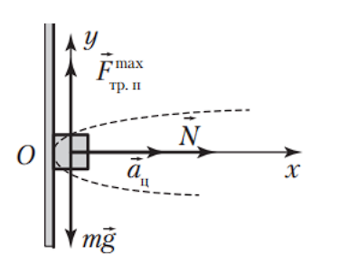